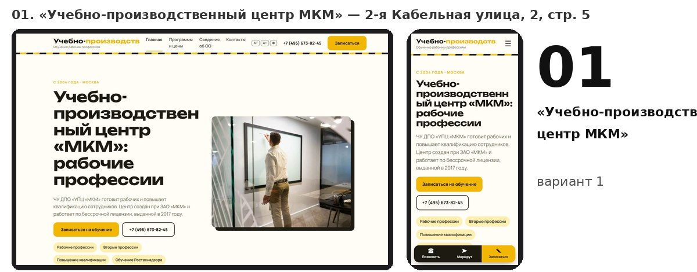
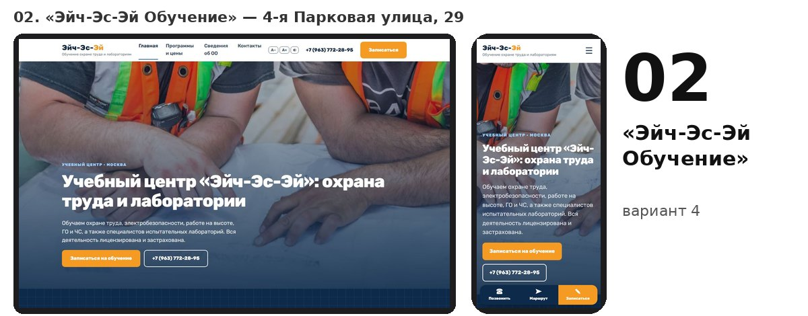
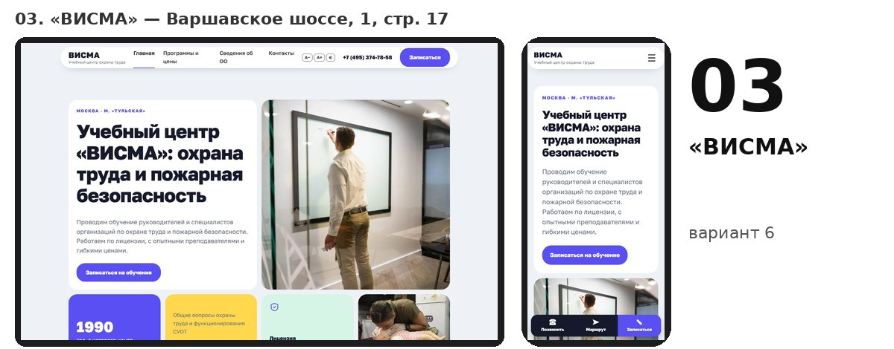
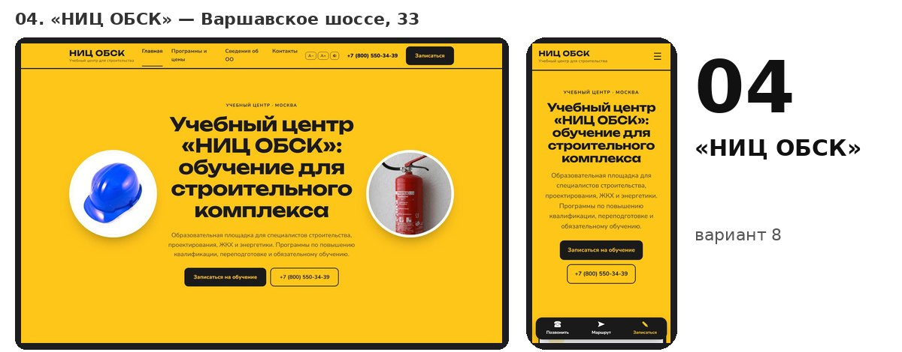
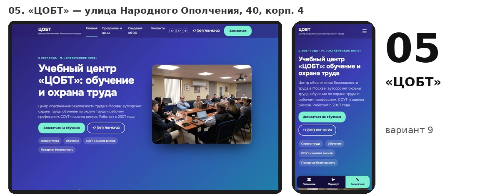
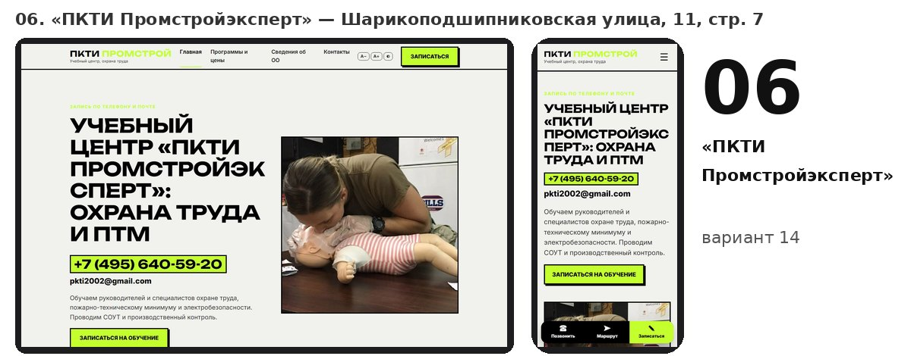
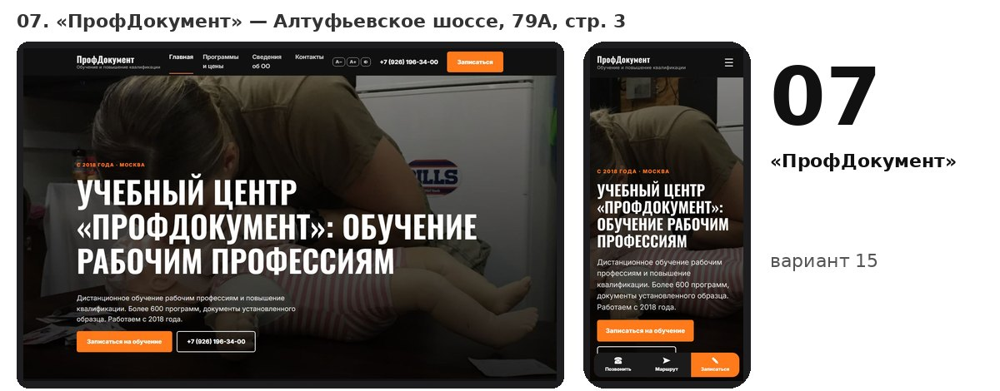
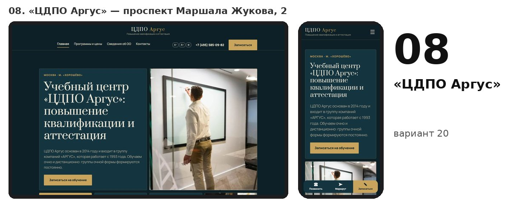
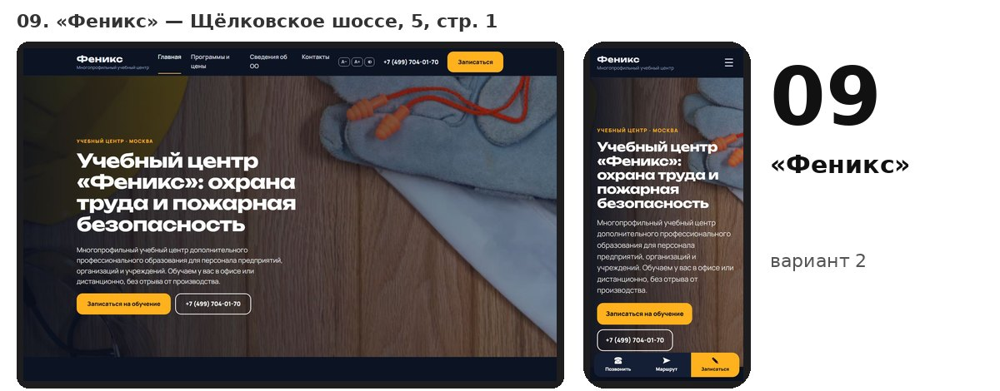
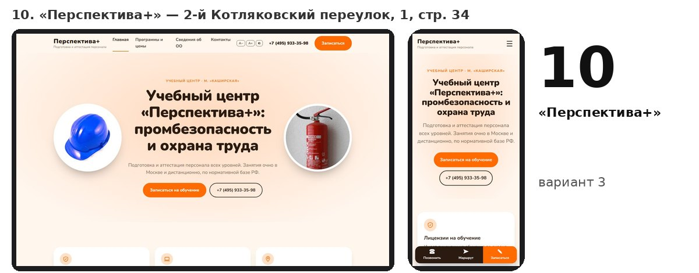

10 центров, Москва. Все ночи

01. «Учебно-производственный центр МКМ»2-я Кабельная улица, 2, стр. 5 · вариант 1Главная · Программы и цены · Сведения · Контакты
02. «Эйч-Эс-Эй Обучение»4-я Парковая улица, 29 · вариант 4Главная · Программы и цены · Сведения · Контакты
03. «ВИСМА»Варшавское шоссе, 1, стр. 17 · вариант 6Главная · Программы и цены · Сведения · Контакты
04. «НИЦ ОБСК»Варшавское шоссе, 33 · вариант 8Главная · Программы и цены · Сведения · Контакты
05. «ЦОБТ»улица Народного Ополчения, 40, корп. 4 · вариант 9Главная · Программы и цены · Сведения · Контакты
06. «ПКТИ Промстройэксперт»Шарикоподшипниковская улица, 11, стр. 7 · вариант 14Главная · Программы и цены · Сведения · Контакты
07. «ПрофДокумент»Алтуфьевское шоссе, 79А, стр. 3 · вариант 15Главная · Программы и цены · Сведения · Контакты
08. «ЦДПО Аргус»проспект Маршала Жукова, 2 · вариант 20Главная · Программы и цены · Сведения · Контакты
09. «Феникс»Щёлковское шоссе, 5, стр. 1 · вариант 2Главная · Программы и цены · Сведения · Контакты
10. «Перспектива+»2-й Котляковский переулок, 1, стр. 34 · вариант 3Главная · Программы и цены · Сведения · Контакты